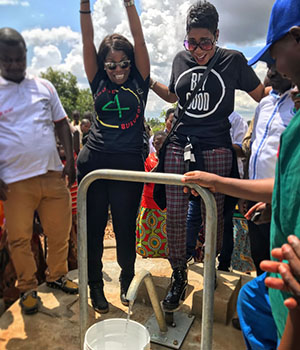
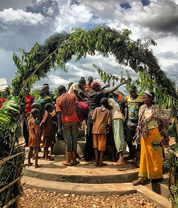
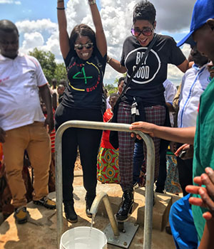
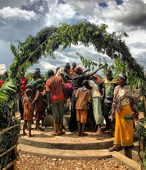

WORLD WATER DAY: BG4B UPDATE
Today we celebrate World Water Day, with an announcement from our friends at Gucci and CHIME FOR CHANGE as well as a progress update from our last trip – the first 35 wells have now been completed! Through BeyGOOD, Beyoncé launched BEYGOO4BURUNDI with UNICEF USA in 2017 to support programs to improve water, sanitation and basic hygiene practices in the hardest-to-reach areas of Burundi, where nearly half the population had no access to safe water.
We're excited to share that Gucci and CHIME FOR CHANGE have officially partnered with BEYGOOD4BURUNDI. Gucci's $1M commitment to the initiative as a founding partner will help support the building of 80 additional wells, providing access to clean, safe water to more than 120,000 women, girls, and their families.
Learn more about Burundi and our progress to date below.
- BURUNDI AT A GLANCE
- Provinces: 18
- Poverty: 8 out of 10 people live on less than $1.25 a day
- Pop: 11.5 Million -49% under 18 years old
- Women: 51%
- Cause of death in children under 5: Endemic water-born diseases
- Water access: 24.5% use unsafe sources for water
- Life expectancy: 43 years
 


